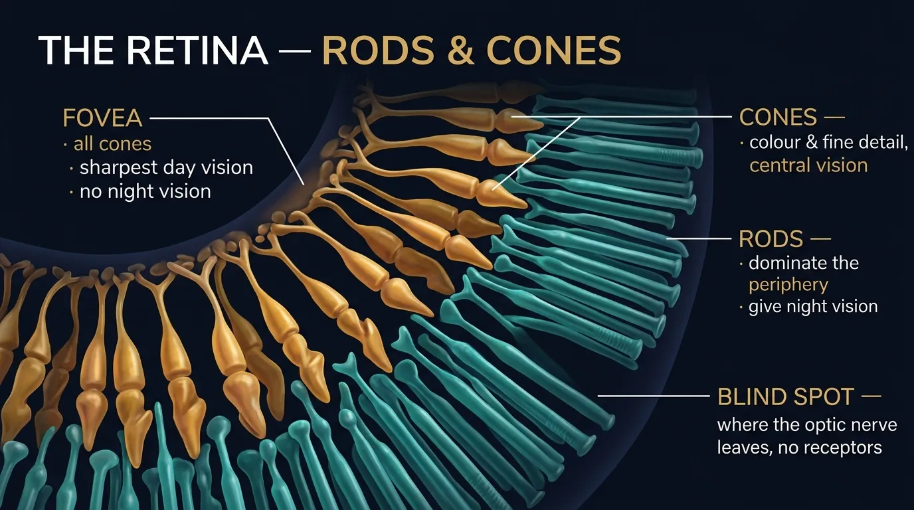

Human Performance & Limitations · Module E — The SensesThe Eye
Chapter 11 — The pilot's primary instrument: how the eye focuses light like a camera, the retina's rods and cones, and the sharpness (visual acuity) the examiner tests.
Plate 11.0 — The pilot's primary instrument. Ninety per cent of the information a pilot uses arrives through the eyes.
§ 29THE EYE
DGCA-quoted opening — the eye is the most important sensorThe eye delivers to the brain information about the outside world at a much faster rate than any other sensory organ. The eye is the organ of sight. The eye is the most sensitive of our sensory organs.
Its basic structure is similar to a camera with an aperture (Iris), a lens (lens) and a light sensitive screen (Retina).
Figure 11.1 — The eye as a camera: the cornea and lens focus light onto the retina; the iris sets the aperture.
29.1 The Cornea, Iris & Pupil, Lens
The Cornea — DGCA-quoted
Light enters the eye through the Cornea, a clear window at the front of the eyeball. The Cornea is capable of contributing 70 % to 80 % towards the total focusing ability of the eye.
The Iris and the Pupil — DGCA-quoted
The amount of light allowed to enter the eye is controlled by the Iris. The Pupil, the hole in the center of the Iris, adjusts to the flow of light.
The Lens — DGCA-quoted
The shape of the lens is changed by muscles. This controls final focusing onto the fovea.
29.2 The Retina — Rods, Cones, and the Fovea
The Retina — DGCA-quoted
The Retina is a light sensitive screen lining the inside of the eyeball. On this screen are light-sensitive cells. When light falls on them, it generates a small electrical charge which is passed to the brain by nerve fibres (neurons) which combine to form the Optic Nerve.
Critical numbers — burn into memory
The retina has rods in its peripheral zone and cones in its central zone. The retina contains the receptors for vision:
About 100 million rods
About 6 million cones
100MRods (peripheral · night vision · black & white)
6MCones (central · day vision · colour & detail)
~17:1Rod-to-cone ratio
The Rods
The Rods can only detect black and white but are much more sensitive at lower light levels.
Rods are responsible for our PERIPHERAL VISION.
Located in the peripheral retina
~ 100 million in number
Sensitive in dim light → night vision
No colour information — monochrome
Slow dark-adaptation (~ 30 min)
The Cones & The Fovea
The central part of the retina is called the FOVEA. The fovea centralis is a small, central pit composed of closely packed cones in the eye.
This is the area with the best day vision and NO night vision at all.
Any object that needs to be examined in detail is automatically brought to focus on the fovea. This is called "Central Vision". The rest of the retina fulfils the function of attracting our attention to movement and change.

CINEMATIC DIAGRAM — pending generation (Banana Pro)Fig 11.2 (The Retina).
Figure 11.2 — The retina: the fovea is all cones (sharp day vision, no night vision); rods dominate the periphery and give night vision.
29.3 Eye Movement & Binocular Vision
Eye Movement — DGCA-quoted
To track an object successfully, or to focus on an object, the eyes need to move in harmony with one another. This means that the brain must co-ordinate control of the muscles of the two eyes. In a fatigued person, double vision can occur.
Binocular Vision — DGCA-quotedBinocular Vision means seeing with two eyes. With binocular vision each eye sees an object from two slightly different angles. The brain merges the two images into one and is thus able to perceive that the image has depth.
A further advantage of binocular vision is that the blind spot of one eye is covered by the other eye. Depth perception when objects are close is achieved through binocular vision.
29.4 Visual Acuity
DGCA-quoted definitionVisual acuity is a measure of the capacity of the eye to determine SMALL DETAIL, UNDISTORTED, at a given distance.
Why acuity matters in flight
The sharpest visual acuity occurs when the retinal image is sharply focused on the fovea, so that the pilot needs to look exactly in the direction of the on-coming aircraft to detect it. It is thus essential for pilots to have normal visual acuity, either with the naked eye, or by wearing spectacles, in order that they may detect objects clearly at safe distance.
29.5 Accommodation & Reading Glasses
Accommodation — DGCA-quoted
As well as being able to see objects clearly at a distance, pilots also need good near vision in order to read instruments and maps. Being able to focus on close objects is a function of the eye's ability to accommodate.
Reading Glasses — DGCA-quotedPilots and drivers who have reached middle-age normally wear bi-focal spectacles to allow them to see clearly at a distance and to read their instruments and maps, while wearing the same spectacles.
Cornea — % of total focusing
70 – 80 %
Rods total
~ 100 million
Cones total
~ 6 million
Best day vision area
Fovea (all cones)
Fovea night vision
NONE
Pilot middle-age glasses
Bi-focal
§ 30Limitations of Acuity — Sharpness of Central Vision
DGCA-quoted
The sharpness of central vision drops as light falls on retina at increasing angles from the fovea. The following factors affect the sharpness of central vision:
Twelve factors that affect the sharpness of central vision (DGCA verbatim)
#
Factor
Pilot Note
1
Angular distance from the fovea
Acuity is maximum on the fovea, drops sharply off-axis.